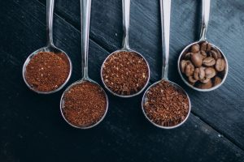
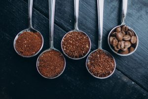
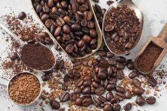

Historia del Café
Explora los orígenes del café, desde sus descubrimientos en Etiopía hasta su evolución global...
Descubre una variedad de recetas deliciosas para preparar tu café favorito en casa.
Explora los orígenes del café, desde sus descubrimientos en Etiopía hasta su evolución global...
Conoce los diferentes tipos de granos de café como el Arábica y Robusta, cada uno con sus características únicas...
Descubre los métodos de preparación más populares: Espresso, Prensa Francesa, Aeropress y Pour Over...
Explora nuestras recomendaciones para acompañar tus bebidas de café con alimentos que realcen los sabores...
Ver MaridajesNombre del Autor: Diana Camila Ayala
Creadora de esta Pagina